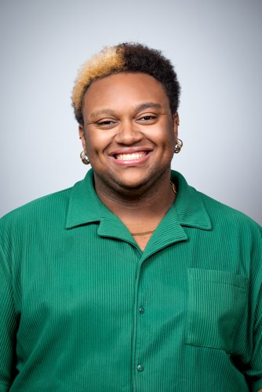

Lavontae Morrow
University of Illinois Chicago
Candidate Statement
Hello everyone! My name is Lavontae Morrow, and I am a Graduate Assistant and student at the University of Illinois Chicago. My journey in speech and debate began in 2016 during my freshman year of high school. Since then, that journey has been shaped by coaches who showed me the power of this activity, not just within the round but in life. It’s through that lens that forensics has continued to transform my life, and I hope it will remain a meaningful part of my journey moving forward.
Serving as a GA at UIC has given me the opportunity to view this activity from a completely new perspective. I once thought coaching was just that…coaching. I was wrong. It’s a continuous, evolving role that asks us to be therapists, chauffeurs, problem-solvers, and yes, sometimes even semesters. Balancing these responsibilities while also navigating graduate school showcases just how essential graduate assistants are to the strength and sustainability of our community in a trying time. If chosen for this role, I would aim to rebuild and strengthen resources for graduate students in the activity, building a community of future coaches that will give back to the community that has given to us!